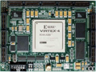
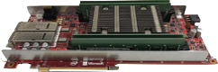

name: title background-image: url(../template/images/Title16x9.jpg) class: title-slide count: false # The .lift[Lift] Project ## Performance Portable Code Generation via Rewrite Rules ### Michel Steuwer .smaller[| [http://michel.steuwer.info](http://michel.steuwer.info/) | [michel.steuwer@glasgow.ac.uk](mailto:michel.steuwer@glasgow.ac.uk)] --- class: split-40 # What is the problem .lift[Lift] tries to tackle? .left-column[ - Parallel processors everywhere - Many different types:<br/> CPUs, GPUs, FPGAs, ... - Parallel programming is hard - Optimising is even harder - **How do we write efficient software for all these devices?** ] <div style="text-align: center;"> <div style="width: 400px; position: absolute; top: 150px; left: 560px"> <strong>CPUs</strong> </div> <div style="width: 500px; position: absolute; top: 220px; left: 640px;"> <strong style="margin-left: -30px;">GPUs</strong> </div> <div style="width: 200px; position: absolute; top: 375px; left: 500px;"> <strong>Accelerator</strong> </div> <div style="width: 150px; position: absolute; top: 395px; left: 740px;">  <strong>FPGA</strong> </div> <div style="width: 150px; position: absolute; top: 375px; left: 960px;"> <strong>TPU</strong> </div> <div style="width: 200px; position: absolute; top: 550px; left: 360px;"> <strong>HPU</strong> </div> <div style="width: 200px; position: absolute; top: 560px; left: 600px;">  <strong>Brainwave</strong> </div> <div style="width: 150px; position: absolute; top: 540px; left: 850px;"> <strong>Neural Engine</strong> </div> </div> --- # Case Study: Parallel Reduction in OpenCL - Summing up all values of an array - Comparison of 7 implementations by Nvidia - Investigating complexity and efficiency of optimisations .box-70[] --- # Parallel Reduction in OpenCL .left[.text-white[-]] .box-70[``` kernel void reduce(global float* g_idata, global float* g_odata, unsigned int n, local float* l_data) { unsigned int tid = get_local_id(0); unsigned int i = get_global_id(0); l_data[tid] = (i < n) ? g_idata[i] : 0; barrier(CLK_LOCAL_MEM_FENCE); for (unsigned int s=1; s < get_local_size(0); s *= 2) { if ((tid % (2*s)) == 0) { l_data[tid] += l_data[tid + s]; barrier(CLK_LOCAL_MEM_FENCE); } } if (tid == 0) g_odata[get_group_id(0)] = l_data[0]; } ```] --- count: false # Parallel Reduction in OpenCL <svg class="full-layover hl"> <rect x="244" y="197" rx="10" ry="10" width="70" height="30"/> <line x1="140" y1="175" x2="244" y2="200"/> <rect x="470" y="265" rx="10" ry="10" width="190" height="30"/> <line x1="420" y1="570" x2="480" y2="292"/> </svg> .left[**Kernel** function exectued in parallel by multiple **work-items**] .box-70[``` kernel void reduce(global float* g_idata, global float* g_odata, unsigned int n, local float* l_data) { unsigned int tid = get_local_id(0); unsigned int i = get_global_id(0); l_data[tid] = (i < n) ? g_idata[i] : 0; barrier(CLK_LOCAL_MEM_FENCE); for (unsigned int s=1; s < get_local_size(0); s *= 2) { if ((tid % (2*s)) == 0) { l_data[tid] += l_data[tid + s]; barrier(CLK_LOCAL_MEM_FENCE); } } if (tid == 0) g_odata[get_group_id(0)] = l_data[0]; } ```] .center[**Work-items** are identified by a unique **global id**] --- count: false # Parallel Reduction in OpenCL <svg class="full-layover hl"> <rect x="470" y="243" rx="10" ry="10" width="180" height="30"/> <line x1="900" y1="175" x2="647" y2="245"/> <rect x="550" y="347" rx="10" ry="10" width="200" height="30"/> <line x1="900" y1="175" x2="647" y2="348"/> <rect x="499" y="497" rx="10" ry="10" width="174" height="30"/> <line x1="580" y1="570" x2="580" y2="525"/> </svg> .right[**Local id** within work-group] .box-70[``` kernel void reduce(global float* g_idata, global float* g_odata, unsigned int n, local float* l_data) { unsigned int tid = get_local_id(0); unsigned int i = get_global_id(0); l_data[tid] = (i < n) ? g_idata[i] : 0; barrier(CLK_LOCAL_MEM_FENCE); for (unsigned int s=1; s < get_local_size(0); s *= 2) { if ((tid % (2*s)) == 0) { l_data[tid] += l_data[tid + s]; barrier(CLK_LOCAL_MEM_FENCE); } } if (tid == 0) g_odata[get_group_id(0)] = l_data[0]; } ```] .center[**Work-items** are grouped into **work-groups**] --- count: false # Parallel Reduction in OpenCL <svg class="full-layover hl"> <rect x="445" y="198" rx="10" ry="10" width="80" height="30"/> <line x1="250" y1="175" x2="450" y2="200"/> <rect x="695" y="198" rx="10" ry="10" width="80" height="30"/> <line x1="250" y1="175" x2="700" y2="200"/> <rect x="620" y="220" rx="10" ry="10" width="65" height="30"/> <line x1="680" y1="175" x2="650" y2="220"/> <rect x="265" y="307" rx="10" ry="10" width="320" height="30"/> <line x1="210" y1="570" x2="300" y2="337"/> <rect x="348" y="414" rx="10" ry="10" width="320" height="30"/> <line x1="210" y1="570" x2="370" y2="444"/> </svg> <div style="float: left;">Big, but slow <strong>global</strong> memory</div> <div style="float: right; margin-right: 330px;">Small, but fast <strong>local</strong> memory</div> <div style="clear: both"></div> .box-70[``` kernel void reduce(global float* g_idata, global float* g_odata, unsigned int n, local float* l_data) { unsigned int tid = get_local_id(0); unsigned int i = get_global_id(0); l_data[tid] = (i < n) ? g_idata[i] : 0; barrier(CLK_LOCAL_MEM_FENCE); for (unsigned int s=1; s < get_local_size(0); s *= 2) { if ((tid % (2*s)) == 0) { l_data[tid] += l_data[tid + s]; barrier(CLK_LOCAL_MEM_FENCE); } } if (tid == 0) g_odata[get_group_id(0)] = l_data[0]; } ```] .left[Memory **barriers** for consistency] --- count: false # Parallel Reduction in OpenCL <svg class="full-layover hl"> <rect x="300" y="365" rx="10" ry="10" width="400" height="100"/> <line x1="300" y1="420" x2="225" y2="175"/> </svg> .left[Potential **deadlock**!] .box-70[``` kernel void reduce(global float* g_idata, global float* g_odata, unsigned int n, local float* l_data) { unsigned int tid = get_local_id(0); unsigned int i = get_global_id(0); l_data[tid] = (i < n) ? g_idata[i] : 0; barrier(CLK_LOCAL_MEM_FENCE); for (unsigned int s=1; s < get_local_size(0); s *= 2) { if ((tid % (2*s)) == 0) { l_data[tid] += l_data[tid + s]; barrier(CLK_LOCAL_MEM_FENCE); } } if (tid == 0) g_odata[get_group_id(0)] = l_data[0]; } ```] --- count: false # Parallel Reduction in OpenCL <svg class="full-layover hl"> <rect x="300" y="365" rx="10" ry="10" width="400" height="100"/> <line x1="300" y1="420" x2="225" y2="175"/> </svg> .left[Potential **deadlock**!] .box-70[``` kernel void reduce(global float* g_idata, global float* g_odata, unsigned int n, local float* l_data) { unsigned int tid = get_local_id(0); unsigned int i = get_global_id(0); l_data[tid] = (i < n) ? g_idata[i] : 0; barrier(CLK_LOCAL_MEM_FENCE); for (unsigned int s=1; s < get_local_size(0); s *= 2) { if ((tid % (2*s)) == 0) { l_data[tid] += l_data[tid + s]; } barrier(CLK_LOCAL_MEM_FENCE); } if (tid == 0) g_odata[get_group_id(0)] = l_data[0]; } ```] .center[**Functionally correct implementations in OpenCL are hard!**] --- # 1. Version: .smaller[Unoptimised Reduction Implementation] .box-70[``` kernel void reduce(global float* g_idata, global float* g_odata, unsigned int n, local float* l_data) { unsigned int tid = get_local_id(0); unsigned int i = get_global_id(0); l_data[tid] = (i < n) ? g_idata[i] : 0; barrier(CLK_LOCAL_MEM_FENCE); for (unsigned int s=1; s < get_local_size(0); s *= 2) { if ((tid % (2*s)) == 0) { l_data[tid] += l_data[tid + s]; } barrier(CLK_LOCAL_MEM_FENCE); } if (tid == 0) g_odata[get_group_id(0)] = l_data[0]; } ```] --- # 2. Version: .smaller[Avoid Divergent Branching] .box-70[``` kernel void reduce(global float* g_idata, global float* g_odata, unsigned int n, local float* l_data) { unsigned int tid = get_local_id(0); unsigned int i = get_global_id(0); l_data[tid] = (i < n) ? g_idata[i] : 0; barrier(CLK_LOCAL_MEM_FENCE); for (unsigned int s=1; s < get_local_size(0); s *= 2) { `int index = 2 * s * tid;` if (`index < get_local_size(0)`) { l_data[`index`] += l_data[`index` + s]; } barrier(CLK_LOCAL_MEM_FENCE); } if (tid == 0) g_odata[get_group_id(0)] = l_data[0]; } ```] --- # 3. Version: .smaller[Avoid Interleaved Addressing] .box-70[``` kernel void reduce(global float* g_idata, global float* g_odata, unsigned int n, local float* l_data) { unsigned int tid = get_local_id(0); unsigned int i = get_global_id(0); l_data[tid] = (i < n) ? g_idata[i] : 0; barrier(CLK_LOCAL_MEM_FENCE); for (`unsigned int s=get_local_size(0)/2; s > 0; s >>= 1`) { if (`tid < s`) { l_data[`tid`] += l_data[`tid`+ s]; } barrier(CLK_LOCAL_MEM_FENCE); } if (tid == 0) g_odata[get_group_id(0)] = l_data[0]; } ```] --- # 4. Version: .smaller[Increase Comp. Intensity per Work-Item] .box-70[``` kernel void reduce(global float* g_idata, global float* g_odata, unsigned int n, local float* l_data) { unsigned int tid = get_local_id(0); `unsigned int i = get_group_id(0) * (get_local_size(0)*2)` `+ get_local_id(0);` l_data[tid] = (i < n) ? g_idata[i] : 0; // perform first addition during loading `if (i + get_local_size(0) < n)` `l_data[tid] += g_idata[i + get_local_size(0)];` barrier(CLK_LOCAL_MEM_FENCE); for (unsigned int s=get_local_size(0)/2; s > 0; s >>= 1) { if (tid < s) { l_data[tid] += l_data[tid+ s]; } barrier(CLK_LOCAL_MEM_FENCE); } if (tid == 0) g_odata[get_group_id(0)] = l_data[0]; } ```] --- # 5. Version: .smaller[Avoid Synchronisation inside a Warp] .box-70[``` kernel void reduce(global float* g_idata, global float* g_odata, unsigned int n, local `volatile` float* l_data){ unsigned int tid = get_local_id(0); unsigned int i = get_group_id(0) * (get_local_size(0)*2) + get_local_id(0); l_data[tid] = (i < n) ? g_idata[i] : 0; if (i + get_local_size(0) < n) l_data[tid] += g_idata[i + get_local_size(0)]; barrier(CLK_LOCAL_MEM_FENCE); `#pragma unroll 1` for (unsigned int s=get_local_size(0)/2; s > `32`; s >>= 1) { if (tid < s) { l_data[tid] += l_data[tid+ s]; } barrier(CLK_LOCAL_MEM_FENCE); } // this is not portable OpenCL code! `if (tid < 32) {` ` if (WG_SIZE >= 64) { l_data[tid] += l_data[tid+32]; }` ` if (WG_SIZE >= 32) { l_data[tid] += l_data[tid+16]; }` ` if (WG_SIZE >= 16) { l_data[tid] += l_data[tid+ 8]; }` ` if (WG_SIZE >= 8) { l_data[tid] += l_data[tid+ 4]; }` ` if (WG_SIZE >= 4) { l_data[tid] += l_data[tid+ 2]; }` ` if (WG_SIZE >= 2) { l_data[tid] += l_data[tid+ 1]; } }` if (tid == 0) g_odata[get_group_id(0)] = l_data[0]; } ```] --- # 6. Version: .smaller[Complete Loop Unrolling] .box-70[``` kernel void reduce(global float* g_idata, global float* g_odata, unsigned int n, local volatile float* l_data){ unsigned int tid = get_local_id(0); unsigned int i = get_group_id(0) * (get_local_size(0)*2) + get_local_id(0); l_data[tid] = (i < n) ? g_idata[i] : 0; if (i + get_local_size(0) < n) l_data[tid] += g_idata[i + get_local_size(0)]; barrier(CLK_LOCAL_MEM_FENCE); `if (WG_SIZE >= 256) {` ` if (tid < 128) { l_data[tid] += l_data[tid+128]; }` ` barrier(CLK_LOCAL_MEM_FENCE); }` `if (WG_SIZE >= 128) {` ` if (tid < 64) { l_data[tid] += l_data[tid+ 64]; }` ` barrier(CLK_LOCAL_MEM_FENCE); }` if (tid < 32) { if (WG_SIZE >= 64) { l_data[tid] += l_data[tid+32]; } if (WG_SIZE >= 32) { l_data[tid] += l_data[tid+16]; } if (WG_SIZE >= 16) { l_data[tid] += l_data[tid+ 8]; } if (WG_SIZE >= 8) { l_data[tid] += l_data[tid+ 4]; } if (WG_SIZE >= 4) { l_data[tid] += l_data[tid+ 2]; } if (WG_SIZE >= 2) { l_data[tid] += l_data[tid+ 1]; } } if (tid == 0) g_odata[get_group_id(0)] = l_data[0]; } ```] --- # 7. Version: .smaller[Fully Optimised Implementation] .box-70[``` kernel void reduce(global float* g_idata, global float* g_odata, unsigned int n, local volatile float* l_data){ unsigned int tid = get_local_id(0); unsigned int i = get_group_id(0) * (get_local_size(0)*2) + get_local_id(0); `unsigned int gridSize = WG_SIZE * get_num_groups(0);` `l_data[tid] = 0;` `while (i < n) { l_data[tid] += g_idata[i];` ` if (i + WG_SIZE < n)` ` l_data[tid] += g_idata[i+WG_SIZE];` ` i += gridSize; }` barrier(CLK_LOCAL_MEM_FENCE); if (WG_SIZE >= 256) { if (tid < 128) { l_data[tid] += l_data[tid+128]; } barrier(CLK_LOCAL_MEM_FENCE); } if (WG_SIZE >= 128) { if (tid < 64) { l_data[tid] += l_data[tid+ 64]; } barrier(CLK_LOCAL_MEM_FENCE); } if (tid < 32) { if (WG_SIZE >= 64) { l_data[tid] += l_data[tid+32]; } if (WG_SIZE >= 32) { l_data[tid] += l_data[tid+16]; } if (WG_SIZE >= 16) { l_data[tid] += l_data[tid+ 8]; } if (WG_SIZE >= 8) { l_data[tid] += l_data[tid+ 4]; } if (WG_SIZE >= 4) { l_data[tid] += l_data[tid+ 2]; } if (WG_SIZE >= 2) { l_data[tid] += l_data[tid+ 1]; } } if (tid == 0) g_odata[get_group_id(0)] = l_data[0]; } ```] --- class: split-50 # Reduction Case Study Conclusions .left-column[ - Programming and optimising OpenCL is complex - Understanding of target hardware required - Program changes are not obvious - Why are we doing this? Is it woth it? ... ] .right-column[ .box-90[.small[``` kernel void reduce(global float* g_idata, global float* g_odata, unsigned int n, local float* l_data) { unsigned int tid = get_local_id(0); unsigned int i = get_global_id(0); l_data[tid] = (i < n) ? g_idata[i] : 0; barrier(CLK_LOCAL_MEM_FENCE); for (unsigned int s=1; s < get_local_size(0); s *= 2) { if ((tid % (2*s)) == 0) l_data[tid] += l_data[tid + s]; barrier(CLK_LOCAL_MEM_FENCE); } if (tid == 0) g_odata[get_group_id(0)] = l_data[0]; } ```]] .smaller[.center[↑ Unoptimised ↑ vs. ↓ Fully Optimised ↓]] .box-90[.small[``` kernel void reduce(global float* g_idata, global float* g_odata, unsigned int n, local volatile float* l_data) { unsigned int tid = get_local_id(0); unsigned int i = get_group_id(0) * (get_local_size(0)*2) + get_local_id(0); unsigned int gridSize = WG_SIZE * get_num_groups(0); l_data[tid] = 0; while (i < n) { l_data[tid] += g_idata[i]; if (i + WG_SIZE < n) l_data[tid] += g_idata[i+WG_SIZE]; i += gridSize; } barrier(CLK_LOCAL_MEM_FENCE); if (WG_SIZE >= 256) { if (tid < 128) { l_data[tid] += l_data[tid+128]; } barrier(CLK_LOCAL_MEM_FENCE); } if (WG_SIZE >= 128) { if (tid < 64) { l_data[tid] += l_data[tid+ 64]; } barrier(CLK_LOCAL_MEM_FENCE); } if (tid < 32) { if (WG_SIZE >= 64) { l_data[tid] += l_data[tid+32]; } if (WG_SIZE >= 32) { l_data[tid] += l_data[tid+16]; } if (WG_SIZE >= 16) { l_data[tid] += l_data[tid+ 8]; } if (WG_SIZE >= 8) { l_data[tid] += l_data[tid+ 4]; } if (WG_SIZE >= 4) { l_data[tid] += l_data[tid+ 2]; } if (WG_SIZE >= 2) { l_data[tid] += l_data[tid+ 1]; } } if (tid == 0) g_odata[get_group_id(0)] = l_data[0]; } ```]] ] --- # Performance Results Nvidia .box-50[] - ... Yes! Optimising improves performance by a factor of **10**! - Optimising is important, but ... --- class: split-50 # Performance Results AMD and Intel .left-column[.box-80[]] .right-column[.box-80[]] .clear-columns[] - ... unfortunatley, optimisations in OpenCL are not portable! - Costly optimisation process required for every new device. - **Challenge**: how to achieve *performance portability*? --- <h1><span style="font-size: 0.7em;">.lift[Lift]: Performance Portable Code Generation via Rewrite Rules</span></h1> <svg class="full-layover dark-hl"> <line x1="250" y1="175" x2="250" y2="290"/> <text x="100" y="225"><a xlink:href="http://www.lift-project.org/publications/2015/steuwer15generating.pdf"> [ICFP 2015] </a></text> <line x1="290" y1="260" x2="290" y2="410"/> <text x="130" y="325"><a xlink:href="http://www.lift-project.org/publications/2016/remmelg16perfport.pdf"> [GPGPU 2016] </a></text> <text x="130" y="355"><a xlink:href="http://www.lift-project.org/publications/2016/steuwer16beyondAutoTuning.pdf"> [CASES 2016] </a></text> <line x1="330" y1="380" x2="330" y2="550"/> <text x="190" y="475"><a xlink:href="http://www.lift-project.org/publications/2017/steuwer17LiftIR.pdf"> [CGO 2017] </a></text> </svg> .box-60[] .center[**Ambition**: automatic generation of *performance portable* code] --- # Walkthrough <svg> <defs> <marker id="arrow" markerWidth="10" markerHeight="10" refX="0" refY="3" orient="auto" markerUnits="strokeWidth"> <path d="M0,0 L0,6 L6,3 z" fill="#555" /> </marker> </defs> </svg> <svg class="full-layover" viewBox="0 0 1280 720"> <text x="100" y="200" style="font-size: 125%;">①</text> <foreignObject x="140" y="160" width="375" height="60"><div> \( sum~xs = reduce~(+)~0~xs \) </div></foreignObject> <line x1="300" y1="230" x2="300" y2="320" stroke="#555" stroke-width="4" marker-end="url(#arrow)" /> <rect x="225" y="260" width="100" height="30" style="fill:rgb(255,255,255);" /> <text x="225" y="280" style="font-size: 125%;"> rewrite rules </text> <g transform="translate(100, 400)"> <text style="font-size: 125%;">②</text> <foreignObject x="40" y="-40" width="450" height="400"><div> <pre><code class="haskell" style="font-size: 50%;"> vecSum = reduce (+) 0 . join . mapWorkgroup ( join . toGlobal (mapLocal (mapSeq id)) . split 1 . join . mapWarp ( join . mapLane (reduceSeq (+) 0) . split 2 . reorder (stride 1) . join . mapLane (reduceSeq (+) 0) . split 2 . reorder (stride 2) . join . mapLane (reduceSeq (+) 0) . split 2 . reorder (stride 4) . join . mapLane (reduceSeq (+) 0) . split 2 . reorder (stride 8) . join . mapLane (reduceSeq (+) 0) . split 2 . reorder (stride 16) . join . mapLane (reduceSeq (+) 0) . split 2 . reorder (stride 32) ) . split 64 . join . mapLocal (reduceSeq (+) 0) . split 2 . reorder (stride 64) . join . toLocal (mapLocal (reduceSeq (+) 0)) . split (blockSize / 128) . reorder (stride 128) ) . split blockSize </code></pre> </div></foreignObject> </g> <line x1="500" y1="350" x2="600" y2="230" stroke="#555" stroke-width="4" marker-end="url(#arrow)" /> <rect x="480" y="260" width="100" height="30" style="fill:rgb(255,255,255);" /> <text x="475" y="280" style="font-size: 125%;"> code generation </text> <g transform="translate(700, 100)"> <text style="font-size: 125%;">③</text> <foreignObject x="40" y="-40" width="450" height="800"><div> <pre><code class="c" style="font-size: 50%;"> kernel void reduce6(global float* g_idata, global float* g_odata, unsigned int n, local volatile float* l_data) { unsigned int tid = get_local_id(0); unsigned int i = get_group_id(0) * (get_local_size(0)*2) + get_local_id(0); unsigned int gridSize = WG_SIZE * get_num_groups(0); l_data[tid] = 0; while (i < n) { l_data[tid] += g_idata[i]; if (i + WG_SIZE < n) l_data[tid] += g_idata[i+WG_SIZE]; i += gridSize; } barrier(CLK_LOCAL_MEM_FENCE); if (WG_SIZE >= 256) { if (tid < 128) { l_data[tid] += l_data[tid+128]; } barrier(CLK_LOCAL_MEM_FENCE); } if (WG_SIZE >= 128) { if (tid < 64) { l_data[tid] += l_data[tid+ 64]; } barrier(CLK_LOCAL_MEM_FENCE); } if (tid < 32) { if (WG_SIZE >= 64) { l_data[tid] += l_data[tid+32]; } if (WG_SIZE >= 32) { l_data[tid] += l_data[tid+16]; } if (WG_SIZE >= 16) { l_data[tid] += l_data[tid+ 8]; } if (WG_SIZE >= 8) { l_data[tid] += l_data[tid+ 4]; } if (WG_SIZE >= 4) { l_data[tid] += l_data[tid+ 2]; } if (WG_SIZE >= 2) { l_data[tid] += l_data[tid+ 1]; } } if (tid == 0) g_odata[get_group_id(0)] = l_data[0]; } </code></pre> </div></foreignObject> </g> </svg> --- # .smaller[①] Algorithmic Primitives .smaller[(a.k.a. algorithmic skeletons)] - `\( map~f~[x_1, \ldots, x_n] = [f~x_1, \ldots, f~x_n] \)` - `\( zip~[x_1, \ldots, x_n]~[y_1, \ldots, y_n] = [(x_1, y_1), \ldots, (x_n, y_n)] \)` - `\( reduce~(+)~0~[x_1, \ldots, x_n] = 0 + x_1 + \cdots + x_n \)` - `\( split~n~[x_1, \ldots, x_m] = \left[ [x_1, \ldots, x_n], \ldots, [x_{m-n}, \ldots, x_m] \right] \)` - `\( join~\left[ [x_1, \ldots, x_n], \ldots, [x_{m-n}, \ldots, x_m] \right] = [x_1, \ldots, x_m] \)` - `\( iterate~f~n~xs = iterate~f~(n-1)~(f~xs) \)` <br/> `\( iterate~f~0~xs = xs \)` - `\( reorder~\sigma~[x_1, \ldots, x_n] = [x_{\sigma(1)}, \ldots, x_{\sigma(n)}] \)` --- # .smaller[①] High-Level Programs .box-70[```haskell scal = λ a xs . map (λ x . x * a) xs asum = λ xs . reduce (+) 0 (map abs xs) dotProduct = λ xs ys . reduce (+) 0 (map (*) (zip xs ys)) gemv = λ mat xs ys α β . map (+) zip( map (λ row . scal α (dotProduct row xs)) mat, scal β ys) mm = λ a b . map (λ rowA . map (λ colB . dotProduct rowA colB ) b ) a ```] <!-- .box-70[ ```haskell scal = λ a xs . xs |> map (λ x . x * a) asum = λ xs . xs |> map abs |> reduce (+) 0 dotProduct = λ xs ys . zip xs ys |> map (*) |> reduce (+) 0 gemv = λ mat xs ys α β . zip( mat |> map (λ row . dotProduct row xs |> scal α), scal β ys ) |> map (+) mm = λ a b . a |> map (λ rowA . b |> map (λ colB . dotProduct rowA colB )) ``` ] --> --- # .smaller[②] Algorithmic Rewrite Rules - **Provably correct** rewrite rules - Express algorithmic implementation choices .box-80[ - Split-join rule:<br/> `\( map~f \rightarrow join \circ map~(map~f) \circ split~n \)` - Map fusion rule:<br/> `\( map~f \circ map~g \rightarrow map~(f \circ g) \)` - Reduce rules:<br/> `\( reduce~f~z \rightarrow reduce~f~z \circ reducePart~f~z \)`<br/><br/> `\( reducePart~f~z \rightarrow reducePart~f~z \circ reorder \)` `\( reducePart~f~z \rightarrow join \circ map~(reducePart~f~z) \circ split~n \)` `\( reducePart~f~z \rightarrow iterate~n~(reducePart~f~z) \)` ] --- # Proof of Correctness of Split-join Rule .box-70[ `\( join~(map~(map~f)~(split~n~[x_1, \ldots, x_n])) \)` <span style="font-size: 0.5em; margin-left: 10px;">def. of `\( split \)`</span><br/> `\( \quad = join~(map~(map~f)~\left[ [x_1, \ldots, x_n], \ldots, [x_{m-n}, \ldots, x_m]\right]) \)`<br/> <span style="font-size: 0.5em; margin-left: 10px;">def. of `\( map \)`</span><br/> `\( \quad = join~\left[ (map~f)~[x_1, \ldots, x_n], \ldots, (map~f)~[x_{m-n}, \ldots, x_m]\right] \)` <span style="font-size: 0.5em; margin-left: 10px;">def. of `\( map \)`</span><br/> `\( \quad = join~\left[[f~x_1, \ldots, f~x_n], \ldots, [f~x_{m-n}, \ldots, f~x_m]\right] \)` <span style="font-size: 0.5em; margin-left: 10px;">def. of `\( join \)`</span><br/> `\( \quad = [f~x_1, \ldots, f~x_n] = map~f~[x_1, \ldots, x_n] \)` ] - Simple equational reasoning - Reasoning similar to *The Algebra of Programming* by *Richard Bird and Oege De Moor* --- class: split-70, opencl-table <style> .opencl-table table { width: 100%; } .opencl-table tr > td { padding-top: 20px; } </style> # .smaller[②] OpenCL Primitives .left-column[ | **Primitive** | **OpenCL concept** | | ------------- |--------------------| | `\( mapGlobal \)` | Work-items | | `\( mapWorkgroup \)` <br/> `\( mapLocal \)` | Work-groups | | `\( mapSeq \)` <br/> `\( reduceSeq \)` | Sequential implementations | | `\( toLocal \)`, `\( toGlobal \)` | Memory areas | | `\( mapVec \)`, `\( splitVec \)`, `\( joinVec \)` | Vectorisation | ] .right-column[] --- # .smaller[②] OpenCL Rewrite Rules - Express low-level implementation and optimisation choices .box-80[ - Map rules:<br/> `\( map~f \rightarrow mapWorkgroup~f~~|~~mapLocal~f~~|~~mapGlobal~f~~|~~mapSeq~f \)` - Local / global memory rule:<br/> `\( mapLocal~f \rightarrow toLocal~(mapLocal~f) \qquad mapLocal~f \rightarrow toGlobal~(mapLocal~f) \)` - Vectorisation rules:<br/> `\( map~f \rightarrow joinVec \circ map~(mapVec~f) \circ splitVec~n \)` - Fusion rule:<br/> `\( reduceSeq~f~z \circ mapSeq~g \rightarrow reduceSeq~(\lambda~x~y.~~f~x~(g~y) )~z \)` ] --- # .smaller[③] Pattern based OpenCL Code Generation - Generate OpenCL code for each OpenCL primitive .box-70[ .left-column[ `\( mapGlobal~f~xs \rightarrow \quad \)` ] .left-column[``` for (int g_id = get_global_id(0); g_id < n; g_id += get_global_size(0)) { output[g_id] = f(xs[g_id]); } ```] .left-column[ `\( reduceSeq~f~xs \rightarrow \quad \)` ] .left-column[``` T acc = z; for (int i = 0; i < n; i++) { acc = f(acc, xs[i]); } ```] <div style="clear:both;"></div> .left-column[ `\( \qquad \vdots \)` ] <div style="clear:both;"></div> ] - A lot more details about the code generation implementation is described in our [CGO 2017](http://www.lift-project.org/publications/2017/steuwer17LiftIR.pdf) paper --- # Case Study: Matrix Multiplication .box-70[] <div style="width: 320px; position: absolute; top: 400px; left: 450px;"><pre><code class="haskell">matMult = λ A B . map (λ rowA . map (λ colB . dotProduct rowA colB ) (transpose B) ) A </code></pre></div> --- class: split-60 # Tiling as a Sequence of Rewrites .box-80[ .left-column[ .center[Naïve matrix multiplication] .box-80[```haskell map (λ rowA . map (λ colB . dotProduct rowA colB ) (transpose B) ) A ```] .center[↓ Apply tiling rules ↓] .box-80[.fs-80[```haskell `untile . map (λ rowOfTilesA .` `map (λ colOfTilesB .` `toGlobal copy2D .` `reduce (λ tileAcc, (tileA, tileB) .` `map (map (+)) . (zip tileAcc) .` map (λ as . map (λ bs . reduce (+) 0 (map (*) (zip as bs)) ) `(toLocal (copy2D tileB)`) ) `(toLocal (copy2D tileA)`) ) `0 (zip rowOfTilesA colOfTilesB)` ) . `tile m k` (transpose B) ) . `tile n k` A ```]] ] .right-column[] ] --- class: split-60 # Register Blocking as a Sequence of Rewrites .box-80[ .left-column[ .box-80[.fs-65[```haskell untile . map (λ rowOfTilesA . map (λ colOfTilesB . toGlobal copy2D . reduce (λ tileAcc, (tileA, tileB) . map (map (+)) . (zip tileAcc) . map (λ as . map (λ bs . reduce (+) 0 (map (*) (zip as bs)) ) (toLocal (copy2D tileB)) ) (toLocal (copy2D tileA)) ) 0 (zip rowOfTilesA colOfTilesB) ) . tile m k (transpose B) ) . tile n k A ```]] .center[↓ Apply blocking rules ↓] .box-80[.fs-80[```haskell untile . map (λ rowOfTilesA . map (λ colOfTilesB . toGlobal copy2D . reduce (λ tileAcc, (tileA, tileB) . map (map (+)) . (zip tileAcc) . map (λ `aBlocks` . map (λ bs . reduce (+) 0 ( `map (λ (aBlock, b) .` `map (λ (a, bp) .` a * bp ) (zip aBlock `(toPrivate b)`) ) (zip `(transpose aBlocks)` bs)) ) (toLocal (copy2D tileB)) ) (`split l` (toLocal (copy2D tileA))) ) 0 (zip rowOfTilesA colOfTilesB) ) . tile m k (transpose B) ) . tile n k A ```]] ] .right-column[] ] --- # Register Blocking via Rewrite Rules .box-80[ `\( register~blocking = \)` <br/> `\( \quad map~f \rightarrow join \circ map~(map~f) \circ split~k~; \)` <br/> `\( \quad map~(λ~a.~map~(λ~b.~(f~a~b))) \rightarrow transpose \circ map~(λ~b.~map~(λ~a.~(f~a~b)))~; \)` <br/> `\( \quad map~(f \circ g) \rightarrow map~f \circ map~g~; \)` <br/> `\( \quad map~(reduce~f~z) \rightarrow transpose \circ reduce~(λ~(acc, x).~map~f \circ (zip~acc~x))~; \)` <br/> `\( \quad map~(map~f) \rightarrow transpose \circ map~(map~f) \circ transpose~; \)` <br/> `\( \quad transpose \circ transpose \rightarrow id~; \)` <br/> `\( \quad reduceSeq~f~z \circ mapSeq~g \rightarrow reduceSeq~(λ~(acc, x).~(f~acc~(g~x))) ~; \)` <br/> `\( \quad map~f \circ map~g \rightarrow map~(f \circ g)~; \)` <br/> ] .right[] --- # Exploration Strategy <svg> <defs> <marker id="arrow2" markerWidth="10" markerHeight="10" refX="0" refY="3" orient="auto" markerUnits="strokeWidth"> <path d="M0,0 L0,6 L6,3 z" fill="#555" /> </marker> </defs> </svg> <svg> <defs> <g id="one-to-many" transform="translate(1, 50)"> <line x1="122" y1="0" x2= "20" y2="21" stroke="#555" stroke-width="2" marker-end="url(#arrow2)" /> <line x1="122" y1="0" x2= "60" y2="24" stroke="#555" stroke-width="2" marker-end="url(#arrow2)" /> <line x1="122" y1="0" x2="100" y2="27" stroke="#555" stroke-width="2" marker-end="url(#arrow2)" /> <line x1="122" y1="0" x2="122" y2="35" stroke="#555" stroke-width="2" marker-end="url(#arrow2)" /> <line x1="122" y1="0" x2="144" y2="27" stroke="#555" stroke-width="2" marker-end="url(#arrow2)" /> <line x1="122" y1="0" x2="184" y2="24" stroke="#555" stroke-width="2" marker-end="url(#arrow2)" /> <line x1="122" y1="0" x2="224" y2="21" stroke="#555" stroke-width="2" marker-end="url(#arrow2)" /> </g> </defs> </svg> <svg class="full-layover" viewBox="0 0 1280 720"> <g transform="translate(150, 175)"> <g transform="translate(0, 0)"> <rect x="0" y="0" width="245" height="50" rx="10" ry="10" style="fill:white; stroke:black; stroke-width: 2;" /> <text x="20" y="30">High-Level Expression</text> </g> <use xlink:href="#one-to-many" transform="translate(0, 0)" /> <text x="250" y="80">Macro Rules</text> <g transform="translate(0, 100)"> <rect x="0" y="0" width="245" height="50" rx="10" ry="10" style="fill:white; stroke:black; stroke-width: 2;" /> <text x="25" y="30">Rewritten Expression</text> </g> </g> </svg> -- <svg class="full-layover" viewBox="0 0 1280 720"> <g transform="translate(150, 175)"> <use xlink:href="#one-to-many" transform="translate(0, 100)" /> <text x="250" y="180">Map to OpenCL</text> <g transform="translate(0, 200)"> <rect x="0" y="0" width="245" height="50" rx="10" ry="10" style="fill:white; stroke:black; stroke-width: 2;" /> <text x="27" y="30">Lowered Expression</text> </g> </g> </svg> -- <svg class="full-layover" viewBox="0 0 1280 720"> <g transform="translate(150, 175)"> <use xlink:href="#one-to-many" transform="translate(0, 200)" /> <text x="250" y="280">Parameter Mapping</text> <g transform="translate(0, 300)"> <rect x="0" y="0" width="245" height="50" rx="10" ry="10" style="fill:white; stroke:black; stroke-width: 2;" /> <text x="20" y="30">Specialised Expression</text> </g> </g> </svg> -- <svg class="full-layover" viewBox="0 0 1280 720"> <g transform="translate(150, 175)"> <g transform="translate(0, 350)"> <line x1="122" y1="0" x2="122" y2="35" stroke="#555" stroke-width="2" marker-end="url(#arrow2)" /> </g> <text x="250" y="380">Code Generation</text> <g transform="translate(0, 400)"> <rect x="0" y="0" width="245" height="50" rx="10" ry="10" style="fill:white; stroke:black; stroke-width: 2;" /> <text x="60" y="30">OpenCL Code</text> </g> </g> </svg> --- name: closing background-image: url(../template/images/Closing16x9.jpg) class: title-slide, text-white count: false # The .lift[Lift] Project ## Performance Portable Code Generation via Rewrite Rules ### Michel Steuwer .smaller[| [http://michel.steuwer.info](http://michel.steuwer.info/) | [michel.steuwer@glasgow.ac.uk](mailto:michel.steuwer@glasgow.ac.uk)] .center-bottom[.big[[http://www.lift-project.org/](http://www.lift-project.org/)]]